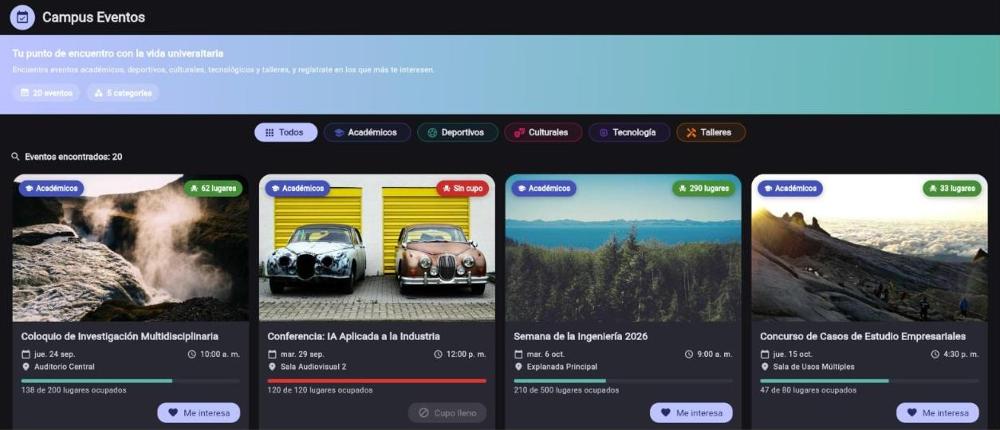
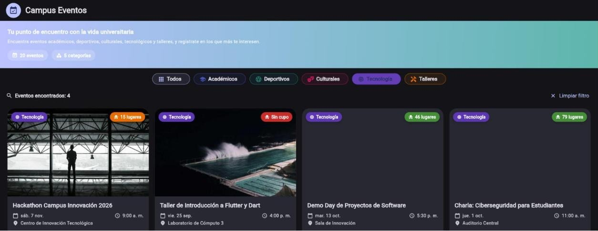
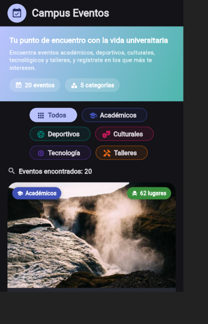

Las universidades organizan de manera constante actividades académicas, deportivas, culturales, tecnológicas y talleres dirigidos a su comunidad estudiantil. Sin embargo, esta información suele encontrarse dispersa entre carteles físicos, redes sociales y comunicados internos, lo que dificulta que un estudiante identifique rápidamente los eventos que son de su interés.
El objetivo de esta práctica es desarrollar Campus Eventos, una aplicación en Flutter que concentre en un solo lugar el catálogo de eventos del campus y permita filtrarlos por categoría, mostrando para cada uno su imagen, nombre, categoría, fecha, hora, lugar y cupo disponible. Además de cumplir con los requerimientos funcionales de la práctica, se buscó que la aplicación tuviera una identidad visual propia y un comportamiento cercano al de una aplicación terminada, en lugar de un ejercicio básico de clase.
El alcance técnico de la práctica exigía el uso de StatefulWidget, setState(),
ListView, GridView, Card, Image, Row,
Column, ChoiceChip y SnackBar, así como una organización del código
separada por responsabilidades (datos, modelos, pantallas, widgets y tema).
El proyecto separa el código en seis carpetas dentro de lib/, cada una con una
responsabilidad única, lo que evita que la pantalla principal contenga datos, estilos o widgets que en
realidad pertenecen a otra capa:
| Carpeta / archivo | Responsabilidad |
|---|---|
models/campus_event.dart | Modelo CampusEvent y enum
EventCategory (con su etiqueta, ícono y color asociados). |
data/event_data.dart | Lista de los 20 eventos; única fuente de verdad de los datos, independiente de la interfaz. |
screens/home_page.dart | Pantalla principal (StatefulWidget),
filtrado y composición de la interfaz. |
widgets/ | EventCard, CategoryChip y
EmptyState: piezas de interfaz reutilizables. |
theme/app_theme.dart | Paleta de colores y ThemeData (modo claro y
oscuro). |
utils/date_utils.dart | Formateo de fechas y horas en español. |
La clase CampusEvent encapsula la información obligatoria de cada evento (identificador,
título, categoría, fecha y hora, lugar, cupo total, lugares ocupados, semilla de imagen y descripción) y
expone propiedades derivadas como spotsAvailable y occupancyRatio, evitando
repetir ese cálculo en la interfaz. El enum EventCategory define las cinco categorías
obligatorias (Académicos, Deportivos, Culturales, Tecnología y Talleres) y, mediante una extensión de Dart,
asocia a cada una su etiqueta, ícono y color, de forma que tanto los chips de filtro como las tarjetas usan
siempre la misma identidad visual por categoría.
El archivo event_data.dart define 20 eventos (cuatro por cada una de las cinco categorías),
con nombres, fechas, horarios, lugares y cupos distintos entre sí, evitando datos repetidos o genéricos.
La pantalla principal (HomePage) es un StatefulWidget cuyo estado
(_selectedCategory) se actualiza mediante setState() cada vez que el usuario
elige una categoría. El listado de eventos se muestra con ListView.builder en pantallas
angostas y con GridView.builder en pantallas anchas, ambos dentro de un mismo
LayoutBuilder. Cada evento se representa con un Card que combina
Image, Row y Column para acomodar la imagen, las insignias de
categoría/cupo, el título, la fecha, el lugar y el botón de acción. El filtro por categoría se construye con
ChoiceChip (envuelto en el widget CategoryChip) y la confirmación de interés se
comunica mediante un SnackBar.
El filtrado no se realiza ocultando visualmente tarjetas, sino recalculando la lista que se va a
construir. La categoría seleccionada se guarda como EventCategory? _selectedCategory, donde
null representa la opción “Todos”. Un getter calcula la lista visible a partir de los datos
originales:
List<CampusEvent> get _filteredEvents {
if (_selectedCategory == null) return campusEvents;
return campusEvents
.where((e) => e.category == _selectedCategory)
.toList(growable: false);
}
Como _filteredEvents se evalúa de nuevo en cada build(), tanto la lista de
tarjetas como el texto “Eventos encontrados: N” quedan siempre sincronizados con la categoría activa, sin
mantener un contador aparte.
Al presionar un CategoryChip, se invoca _selectCategory(category), que ejecuta
setState(() => _selectedCategory = category). Esto reconstruye la pantalla y, con ella, el
getter de eventos filtrados. Al elegir “Todos” se pasa null, restaurando el catálogo completo.
Un botón “Limpiar filtro” —visible únicamente cuando hay una categoría activa— ofrece un atajo adicional
para volver a “Todos”.
Cada tarjeta expone un botón “Me interesa” (deshabilitado y con la etiqueta “Cupo lleno” cuando el evento ya no tiene lugares disponibles). Al presionarlo se ejecuta:
ScaffoldMessenger.of(context)
..hideCurrentSnackBar()
..showSnackBar(SnackBar(
content: Text('Te registraste en "${'$'}{event.title}"')));
El SnackBar incluye siempre el nombre exacto del evento presionado, y se oculta cualquier
aviso previo antes de mostrar el nuevo para evitar que se acumulen en pantalla.
Un LayoutBuilder mide el ancho disponible en tiempo real. Por debajo de 640 px
(constante AppBreakpoints.phone) se usa un ListView.builder de una sola columna,
propio de una pantalla de celular. A partir de 640 px se usa un GridView.builder con
SliverGridDelegateWithMaxCrossAxisExtent, que calcula automáticamente el número de columnas
(2, 3 o más) según el ancho disponible, en lugar de fijarlo manualmente. La barra de categorías utiliza
Wrap en vez de una fila con desplazamiento horizontal, de modo que en pantallas muy angostas
los chips que no caben bajan a una segunda línea sin recortarse. Los textos largos (títulos y ubicaciones)
usan maxLines y TextOverflow.ellipsis para evitar que se corten de forma abrupta o
desborden la tarjeta.
Además de la estructura mínima solicitada, se agregaron las carpetas models/ (tipado de los
datos) y utils/ (formateo de fecha y hora en español sin depender del paquete
intl). Se escribieron tres pruebas de widget con flutter_test que verifican: (1)
la carga inicial con los 20 eventos, (2) que filtrar por “Tecnología” reduce el conteo a 4 y que “Todos” lo
restaura, y (3) que al presionar “Me interesa” aparece el SnackBar con el nombre exacto del
evento. Las tres pruebas, junto con flutter analyze, se ejecutan sin errores ni advertencias.
A continuación se muestra la aplicación en ejecución en dos formatos de pantalla: una vista ancha
(escritorio/web) y una vista de celular (390×844 px), incluyendo el filtrado por categoría y la
confirmación mediante SnackBar.

GridView
de cuatro columnas, 20 eventos encontrados.

ListView de una columna, sin
elementos desbordados.SnackBar mostrado al presionar “Me interesa” en el evento “Hackathon
Campus Innovación 2026”.En ambos formatos la información de cada tarjeta (imagen, categoría, cupo, fecha, hora, lugar y barra de
ocupación) permanece completa y legible, y el cambio de ListView a GridView ocurre
automáticamente según el ancho de la ventana, sin intervención del usuario.
El desarrollo de Campus Eventos permitió aplicar, más allá de un ejercicio introductorio, patrones que
se usan en aplicaciones reales: separar los datos de la interfaz, derivar el estado visible (lista filtrada
y contador) a partir de un único valor de estado en lugar de mantener variables redundantes, y adaptar el
mismo árbol de widgets a distintos tamaños de pantalla mediante LayoutBuilder.
El principal reto técnico fue diseñar tarjetas de evento que no se desbordaran dentro de las columnas
más angostas que puede generar un GridView de ancho automático. Se resolvió limitando los
textos con maxLines y TextOverflow.ellipsis, y calculando un
childAspectRatio con margen suficiente para el contenido más largo (título de dos líneas,
fecha, lugar, barra de cupo y botón). Un segundo reto fue verificar el comportamiento responsivo sin un
dispositivo físico disponible en el momento de las pruebas; esto se resolvió redimensionando la ventana del
navegador para simular tanto un ancho de celular como uno de escritorio, y complementando la verificación
manual con las pruebas automatizadas de widget, que ejercitan el filtrado y el SnackBar de
forma reproducible.
Como trabajo futuro, la aplicación podría ampliarse con persistencia real de los registros de interés, búsqueda por texto y notificaciones para los eventos con cupo próximo a agotarse.
[1] Google, “Flutter documentation,” 2026. [En línea]. Disponible: https://docs.flutter.dev
[2] Google, “Dart programming language,” 2026. [En línea]. Disponible: https://dart.dev
[3] Google, “Material Design 3,” 2026. [En línea]. Disponible: https://m3.material.io
[4] Google, “ChoiceChip class — Flutter API,” 2026. [En línea]. Disponible: https://api.flutter.dev/flutter/material/ChoiceChip-class.html
[5] Google, “SnackBar class — Flutter API,” 2026. [En línea]. Disponible: https://api.flutter.dev/flutter/material/SnackBar-class.html